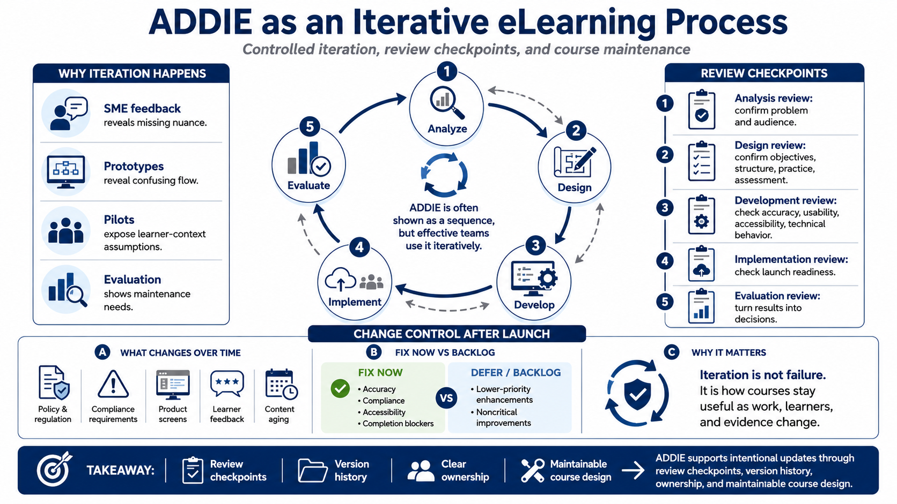

Iteration, Review, and Change Control
Connecting to LMS... Progress: in progress

Narration
ADDIE is often drawn as a sequence, but effective eLearning teams use it iteratively. New information appears during analysis, design, development, implementation, and evaluation. A subject matter expert may identify missing nuance. A prototype may reveal confusing flow. A pilot may expose assumptions about learner context. Evaluation may show that the course needs maintenance.
Review checkpoints keep iteration controlled. Analysis review confirms the problem and audience. Design review confirms objectives, structure, practice, and assessment. Development review checks accuracy, usability, accessibility, and technical behavior. Implementation review checks launch readiness. Evaluation review turns results into decisions. These checkpoints prevent late surprises from becoming uncontrolled redesign.
Change control is especially important after launch. Content ages. Compliance requirements change. Product screens update. Policies are revised. Learner feedback identifies unclear sections. Without revision logs, version history, and ownership, a course can become inaccurate while still appearing polished. A maintainable course has a clear path for updates.
Not every issue should be fixed immediately. Some changes are critical because they affect accuracy, compliance, accessibility, or learner ability to complete the course. Other improvements can be backlogged for the next scheduled update. Good change control helps the team decide what to fix now, what to monitor, and what to defer.
Iteration is not a sign the original design failed. It is how courses stay useful. The workplace changes, learners change, and evidence accumulates. ADDIE gives teams a way to update learning intentionally instead of reacting to every request as a separate emergency.